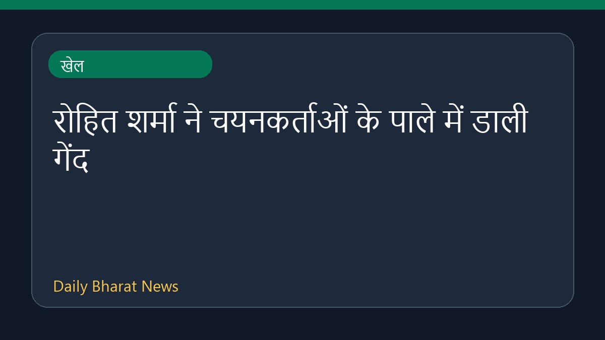

रोहित शर्मा ने चयनकर्ताओं के पाले में डाली गेंद

एक पूर्व क्रिकेटर के अनुसार, भारतीय कप्तान रोहित शर्मा ने चयनकर्ताओं के पाले में गेंद डाल दी है। मीडिया रिपोर्ट्स में यह भी चर्चा है कि चयनकर्ता उन्हें विश्व कप की योजनाओं से बाहर रखना चाहते हैं। इसके अलावा, मुख्य चयनकर्ता अजीत आगरकर की नौकरी पर संकट के बादल मंडराने की खबरें सामने आ रही हैं, और उनकी जगह किसी अन्य पूर्व भारतीय दिग्गज को यह जिम्मेदारी मिलने की अटकलें लगाई जा रही हैं। इस मामले में बीसीसीआई और चयन समिति के बीच अंदरूनी समीकरणों को लेकर भी विभिन्न कयास लगाए जा रहे हैं।
मूल स्रोत: Sports News Sources
'You drop me': Ex-cricketer says Rohit Sharma has thrown the ball into selectors' court - The Times of India ↗
'You drop me': Ex-cricketer says Rohit Sharma has thrown the ball into selectors' court - The Times of India ↗